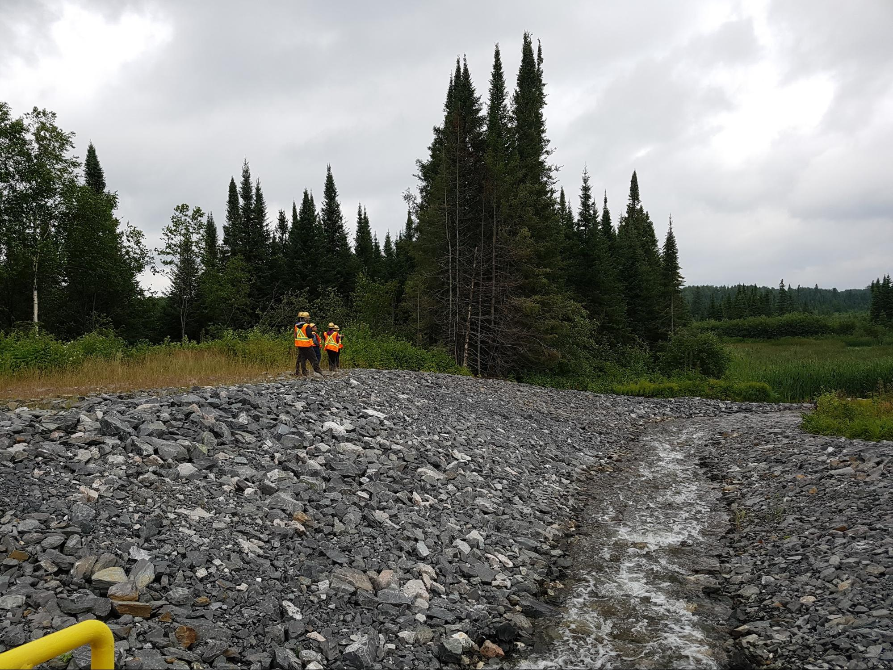

Living with Nature
Living in harmony with nature and the land is not an easy place to ‘return’ to, as many might assume. Consider the insights of two ‘art+ecology’ projects, the Slug ‘o’metric and the Breast Plough’o’metric by Paul Chaney. The Plough’o’metric is “a series of digital strain gauges and a small on-board computer [that] allow[s] the operator to record the exact amount of effort needed to plough some land by human power alone.” Similarly, the Slug ‘o’ metric is a set of garden-scissors-as-sculptures that kill garden slugs and quantify their deaths. According to the artist, the scissors mirror the process of outsourcing death to different technologies, thus putting distance between humans and non-humans. It also follows the process of how technology in agriculture mediates relationships between human and non-human. Regine de Batty writes of these works: “Both unsettle the typical illusion that ‘living with the land’ is a pure and uncomplicated affair.”
Effluent run-off from a gold mine cleaned with ammonia before being re-integrated with nature.Quebec, Canada, 2017. Image: Maya Ganesh.
Effluent run-off from a gold mine cleaned with ammonia before being re-integrated with nature.Quebec, Canada, 2017. Maya Ganesh.